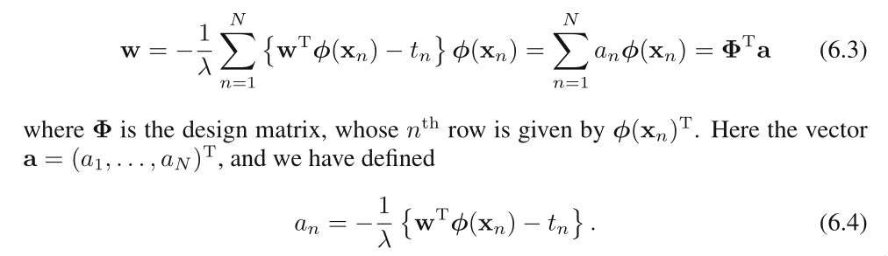
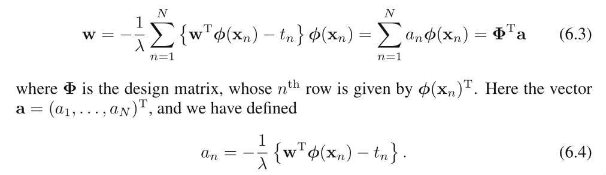
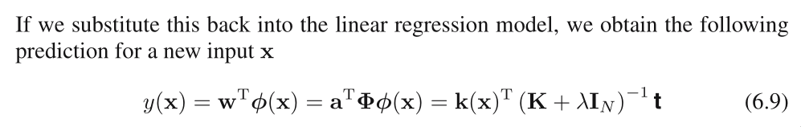
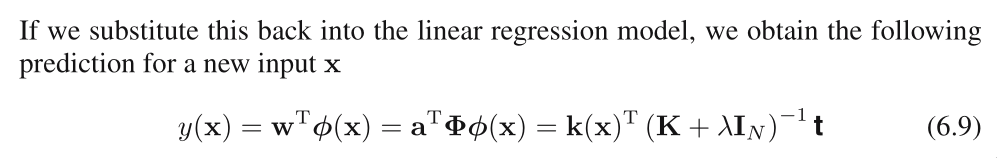

Home
Dual representation
Many linear models for regression and classification can be
reformulated in terms of a dual representation in which the ker‐
nel function arises naturally.
The existence of a dual representation based on the Gram matrix
is a property of many linear models, including the perceptron.
There is a duality between probabilistic linear models for re‐
gression and the technique of Gaussian processes.
Duality plays an important role in support vector machines.
 What is a regularized sum‐of‐squares error function? Why do we
need regularization?
Set the gradient of J(w) to 0 with respect to w:

What is a regularized sum‐of‐squares error function? Why do we
need regularization?
Set the gradient of J(w) to 0 with respect to w:

 Gram matrix
Gram matrix
 We have introduced the kernel function k(x,x’)
We have introduced the kernel function k(x,x’)

 
